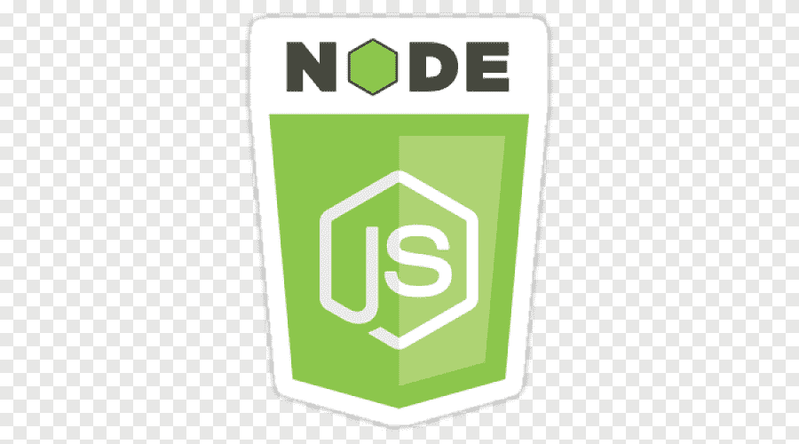
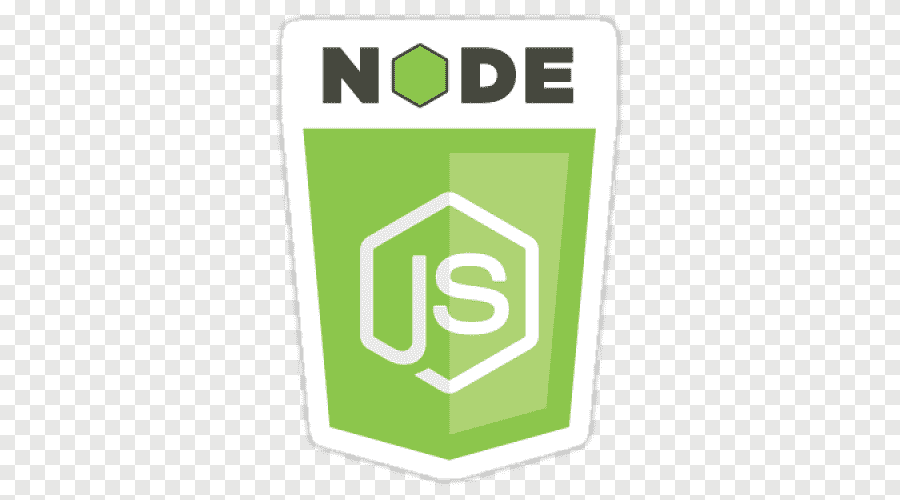

Adam G Bennett
Tucson, AZ
Skills:


 

Hello, I'm Adam, a Fullstack Developer.!
I build tools to automate processes and help your business run more efficiently.
For the past three years, I have been working as a self-taught freelance web developer, with a specialization in MERN stack (MongoDB, Express.js, React, and Node.js), allowing me to deliver end-to-end solutions that meet the diverse needs of my clients, ensuring both functionality and scalability.
Work History
LoveSetMatch
WordPress Web Development (Volunteer Work)
Time-Frame:Oct. 2023 - Present
Skills/Tools Used:WordPress, Elementor, Astra theme, Yoast for SEO
Yellow Rose Studios
WiX Web Development
Time-Frame:Feb. 2023 - Present
Skills/Tools Used:WiX
Pulloutshelf.com
WordPress Web Development
Time-Frame:June 2022 - July 2022
Skills/Tools Used:WordPress, Elementor, Astra theme, Yoast Plugin for SEO
RockStarSMS
CSS Development
Time-Frame:Oct. 2022 - Nov. 2022
Skills/Tools Used:CSS, Firefox developer tools, VS Code
Dreaming of a Chance
SEO Website Audit (Volunteer Work)
Time-Frame:June 2022
Skills/Tools Used:SemRush
HTML Form Enhancement
Javascript Development
Time-Frame:Oct. 2022 - Nov. 2022
Skills/Tools Used:HTML, CSS, Javascript, VS Code
Santorini Greek Cafe
WordPress Web Development
Time-Frame:Oct. 2020 - April. 2021
Skills/Tools Used:WordPress, Gutenberg Blocks, Yoast Plugin for SEO, WooCommerce